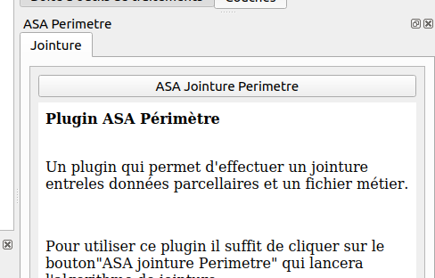
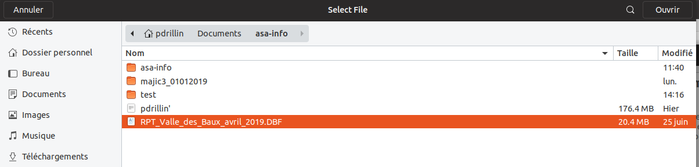

Un plugin qui permet d'effectuer une jointure entre les données parcellaires et un fichier métier.
Pour utiliser ce plugin il suffit de cliquer sur le bouton "ASA jointure Perimetre" présent ans l'image ci-dessous qui lancera l'algorithme de jointure.
Voici l'interface de l’algorithme de jointure, il dispose de trois paramètres: le premier concerne la couche des parcelles, le deuxième la couche rôle et le dernier le dossier où l'on veut sauvegarder la couche périmètre.

Pour les deux premiers paramètres soit vous avez les couches dans un projet QGIS et alors vous pourrez les sélectionner via liste déroulante. Soit vous cliquez sur le bouton avec trois points dessous et une boîte de sélection de fichiers s'ouvre comme l'image ci-dessous ou vous irez chercher votre ou vos fichier(s) de données comme le fichier concernant la couche rôle.
Pour le dernier paramètre il vous faut cliquer sur le bouton avec les trois points. Une liste de choix s'offre vous, il vous faut cliquer sur "Enregistrer vers un fichier..." qui vous ouvrira une boîte comme l'image ci-dessous pour sélectionner le dossier de sortie et le nom que vous donnerais à la couche ex: périmètre.shp

Pour finir il vous restera a cliquer sur le bouton "Exécuter" en bas à droite de l'interface de l'algorithme présent sur la deuxième image.